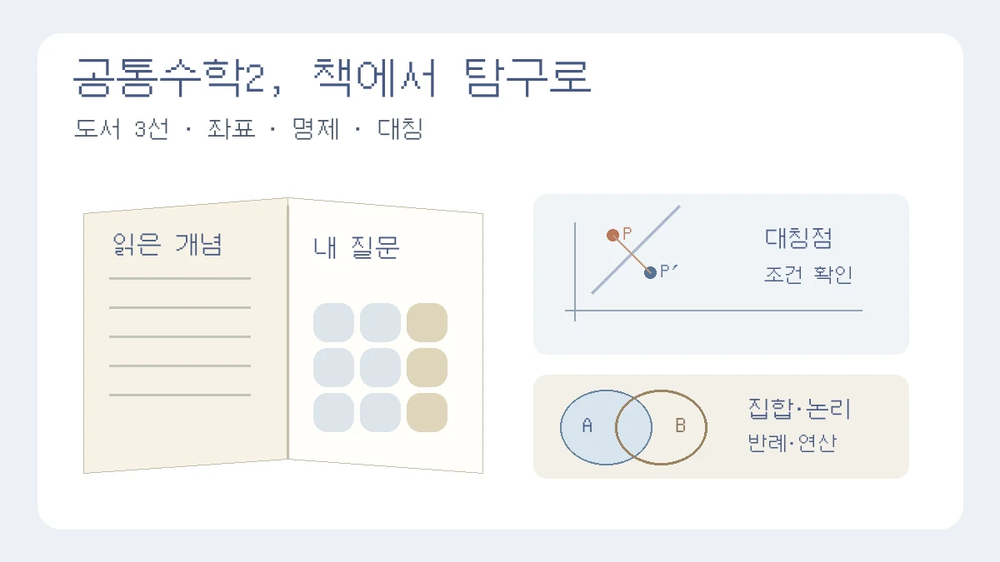

공통수학2 수행평가, 책 요약에서 끝내지 않으려면? 도서 3선과 심화 탐구
실제 읽은 장·쪽에서 질문 하나를 고르고, 증명·반례·계산·구현으로 확인하기
목차
- 도서 후보 세 권과 난도
- 좌표와 중선 정리
- 러셀의 역설과 명제
- 유한집합과 SQL 비교
- 일반 직선의 대칭점
- 선택적 그래픽스 연결
- 한글 독서 보고서 구성
- 제출 전 점검
핵심 요약
- 책 소개와 실제 독서를 구분하고 서지·장·쪽 기록
- 수치 확인과 일반 증명, 그림과 근거 구분
- 대칭점의 조건·SQL 중복·전체집합 확인

공통수학2 수행평가에서 수학책을 읽고 보고서를 쓰라면, 책을 고르는 것만큼 ‘읽은 뒤 무엇을 확인할까’를 정하는 일이 필요합니다. 좌표를 읽었다면 거리나 도형의 방정식을, 명제를 읽었다면 역·대우와 반례를, 대칭을 읽었다면 변환 전후의 관계를 직접 확인할 수 있습니다. 책 줄거리를 길게 쓰는 대신, 읽은 대목과 자신의 수학적 활동이 연결되는 질문 하나를 골라 보세요.
이 글은 도형의 방정식과 집합·명제를 중심으로 도서 후보 세 권과 탐구 예시를 제안합니다. 도서명·저자·출판사는 서점의 서지 정보와 소개·목차로 확인했습니다. 책 전체를 읽고 평가한 독서 후기는 아니며, 아래의 증명·계산 활동이 해당 책에 그대로 수록되어 있다는 뜻도 아닙니다. 구매 전에 학교·공공도서관 소장 자료나 미리보기를 확인하고, 실제 읽은 판의 장·쪽을 기록하세요.
1. 도서 후보 3권: 서지와 난도를 먼저 확인하기
좌표 입문: 『데카르트가 들려주는 좌표 이야기』
김승태 지음, 자음과모음. 서지·책 소개 확인. 좌표 개념을 읽고 도형을 수로 표현하는 방법을 탐구하는 입문 후보입니다. ‘평면좌표가 도형의 성질을 어떻게 식으로 바꾸는가?’를 질문으로 삼을 수 있습니다. 데카르트가 화자로 등장하는 시리즈라고 해서 데카르트가 직접 쓴 책은 아닙니다.
보고서에서는 논증기하와 좌표기하를 같은 성질을 설명하는 서로 다른 방식으로 비교합니다. 논증기하가 틀렸거나 좌표기하가 모든 경우에 더 효율적이라는 결론을 미리 정하지 마세요. 비교하려는 성질, 좌표 설정, 계산량과 사용한 정리를 먼저 정합니다.
집합·명제 연결: 『러셀이 들려주는 명제와 논리 이야기』
황선희 지음, 자음과모음. 서지·목차 확인. 명제, 증명, 역·대우, 조건과 패러독스 등을 연결해 읽는 후보입니다. 집합과 명제를 연결해 읽을 때도 실제 도서명과 저자를 기록하세요. 러셀의 역설이나 공리적 집합론 전체를 고1 수준에서 증명해야 하는 책으로 소개하지 않습니다.
읽은 내용에서 ‘어떤 조건을 만족하면 원소를 모아도 되는가?’ 또는 ‘명제의 역은 언제 거짓이 되는가?’처럼 좁은 질문을 고르세요. 집합 연산은 작은 유한집합으로, 조건문은 진리표와 반례로 확인할 수 있습니다. 역설을 이해하는 활동과 유한 데이터 연산을 구현하는 활동은 목적이 다르므로 구분합니다.
대칭의 역사 확장: 『아름다움은 왜 진리인가』
이언 스튜어트 지음, 승산. 서지·출판사 제공 소개 확인. 대칭의 역사를 대수·방정식·군 등의 관점과 연결하는 심화 후보입니다. 대칭을 교과서의 도형 이동에서 수학사로 확장해 읽고 싶은 경우에 검토할 수 있습니다. 도형의 대칭이동만 설명하는 쉬운 교과 보조서라고 생각하면 내용이 어려울 수 있습니다.
앞의 두 입문 후보보다 배경지식이 필요합니다. 미리보기에서 읽을 수 있는 부분인지 확인하고, 실제 읽은 대목에서 대칭의 의미를 정리한 뒤 작은 도형의 변환으로 연결하세요. 군론 전체를 다뤘다고 쓰거나 자연의 모든 패턴을 한 변환식으로 설명할 필요는 없습니다.
2. 좌표 탐구: 원의 방정식과 중선 정리를 조건부터 유도하기
질문 예시: 같은 도형의 성질을 좌표로 나타내면 어떤 계산을 통해 확인할 수 있을까?
중심 O(h, k), 반지름 r > 0인 원 위의 점 P(x, y)는 OP = r를 만족합니다. 거리 공식에서 √((x−h)²+(y−k)²) = r를 얻고, 양변을 제곱하면 (x−h)² + (y−k)² = r²입니다. 반대로 이 식을 만족하는 점의 중심까지 거리는 r입니다. 등식만 적는 대신 중심·반지름의 의미와 역방향 설명까지 쓰면 방정식이 무엇을 나타내는지 확인할 수 있습니다.
더 확장하려면 삼각형의 중선 정리인 아폴로니오스 정리를 좌표로 확인할 수 있습니다. B(−d, 0), C(d, 0), M(0, 0), A(u, v)로 놓고 d > 0, v ≠ 0으로 정하면 M은 BC의 중점이고 삼각형이 퇴화하지 않습니다.
AB² + AC² = (u+d)²+v² + (u−d)²+v²
= 2u²+2v²+2d²
= 2(AM²+BM²).
자료의 기하적 증명을 함께 읽었다면 두 방법에서 사용한 정리와 좌표 설정의 이유를 비교하세요. 특정 예에서 계산이 짧았다는 것과 모든 기하 문제에서 좌표 방식이 더 좋다는 것은 다른 결론입니다. 위 전개는 일반 변수로 된 증명이고, 숫자를 여러 번 대입하는 확인은 계산 실수를 찾는 점검이지 일반 증명을 대신하지 않습니다.
3차원 거리 √((x₂−x₁)²+(y₂−y₁)²+(z₂−z₁)²)는 피타고라스 정리를 두 번 적용해 확장할 수 있습니다. 이때 ‘좌표 사이의 거리를 계산했다’고 표현하세요. 실제 GPS의 위치 추정에는 위성 신호와 시간 등의 조건이 관여하므로 거리 공식 하나를 적었다고 GPS 알고리즘을 구현·검증한 것은 아닙니다.
3. 집합·명제 탐구: 러셀의 역설을 유한집합 그림과 혼동하지 않기
러셀의 역설은 제한 없이 ‘자기 자신을 원소로 포함하지 않는 모든 집합의 집합’ R을 만들 수 있다고 가정할 때 드러납니다. R이 자기 자신을 원소로 포함하면 정의에 따라 포함하지 않아야 하고, 포함하지 않으면 정의에 따라 포함해야 합니다. 기호로는 R ∈ R ⇔ R ∉ R라는 모순이 생깁니다. Stanford Encyclopedia of Philosophy의 러셀 역설 설명에서 배경과 대응을 참고할 수 있습니다.
교과서의 벤다이어그램은 정해진 전체집합 안의 원소와 포함 관계를 설명하는 데 유용하지만, 위의 ‘모든 집합’을 유한 원소 몇 개로 그려 검증하는 도구는 아닙니다. 현대 공리적 집합론에서는 아무 조건으로나 무제한의 집합을 만드는 방식을 허용하지 않습니다. 예를 들어 분리 공리는 이미 주어진 집합에서 조건에 맞는 원소를 골라 부분집합을 만드는 방식입니다. 이 한 문단으로 ZFC 전체의 무모순성을 증명한 것은 아닙니다.
교과 수준의 실천 활동은 별도로 정하세요. ‘x가 4의 배수이면 x는 짝수이다’의 대우와 역을 적고 반례를 찾거나, 유한집합의 연산을 비교하는 활동이 가능합니다. 대우는 원래 명제와 논리적으로 동치이지만 역은 자동으로 참이 되지 않습니다. 변수의 범위를 정수로 명시하고, 예를 들어 2가 역의 반례인지 직접 확인해 보세요.
4. 데이터 응용: JOIN을 교집합이라고 부르기 전에 결과 비교하기
계산 연습용으로 U = {1,2,3,4,5,6,7,8,9,10}, A = {2,4,6,8,10}, B = {3,6,9}를 정합니다. 실제 학생 조사 데이터가 아닌 인공 예시입니다. 손으로 구한 결과는 A∪B = {2,3,4,6,8,9,10}, A∩B = {6}, U\A = {1,3,5,7,9}입니다. x∈A 또는 x∈B는 합집합, 두 조건을 모두 만족하면 교집합에 대응합니다. 여집합을 말할 때는 U가 무엇인지 꼭 적습니다.
SQL을 배우고 있다면 SQLite에서 한 열의 정수 자료로 같은 질문을 확인할 수 있습니다. SQLite SELECT 공식 문서를 참고하세요. 다음은 실행 가능한 작은 예시입니다.
CREATE TABLE a(n INTEGER);
CREATE TABLE b(n INTEGER);
INSERT INTO a VALUES (2),(2),(4),(6),(8),(10);
INSERT INTO b VALUES (3),(6),(9);
SELECT n FROM a UNION SELECT n FROM b ORDER BY n;
SELECT n FROM a INTERSECT SELECT n FROM b ORDER BY n;
SELECT n FROM a UNION ALL SELECT n FROM b ORDER BY n;UNION은 중복을 제거하고, UNION ALL은 중복을 유지합니다. 따라서 앞의 A 집합에는 2를 한 번만 적어도, 테이블 a에는 행 (2)가 두 개 있습니다. INTERSECT는 두 조회 결과에 공통으로 있는 행을 구합니다. JOIN은 연결 조건에 맞는 행을 결합하는 연산이므로 이름만으로 교집합과 같다고 놓지 않습니다. 결과의 행·열과 중복 여부까지 비교해야 합니다.
이 예시는 NULL 없이 동일한 형식의 한 열을 사용합니다. 실제 SQL에는 NULL과 삼값 논리 등 추가 조건이 있으므로 학교에서 배운 참·거짓 논리와 모든 쿼리가 그대로 같다고 일반화하지 않습니다. ‘프로그래밍으로 집합론을 완전히 증명했다’가 아니라 ‘정의한 유한 데이터에서 연산 결과의 대응과 차이를 확인했다’고 쓰는 범위가 적절합니다.
5. 대칭 탐구: 기울기 대신 수선의 발로 일반 직선 다루기
질문 예시: x축이나 y=x에 대한 대칭을 넘어, 임의의 직선에 대한 대칭점은 어떻게 구할까?
직선 L: ax+by+c = 0에서 a²+b² > 0으로 두고, 점 P(x, y)에서 L에 내린 수선의 발을 H라 합니다. 직선의 법선 방향은 (a, b)이므로 H = (x−at, y−bt)로 놓을 수 있습니다. H가 L 위에 있어야 하므로 ax+by+c−(a²+b²)t = 0, 따라서 t = (ax+by+c)/(a²+b²)입니다. H가 PP′의 중점이라는 조건에서 P′ = 2H−P를 얻습니다.
대칭점 공식
x′ = x − 2a(ax+by+c)/(a²+b²)
y′ = y − 2b(ax+by+c)/(a²+b²).
y=mx+n은 a=m, b=−1, c=n으로 바꾸어 적용할 수 있습니다. ‘수직이면 기울기의 곱이 −1’이라는 방식만 사용하면 수직선 등 기울기가 정의되지 않는 경우를 놓칩니다. 위 법선 방식은 x=일정한 값인 직선에도 적용할 수 있습니다.
계산 예시: P(3,1)을 y=x+1에 대해 대칭이동하면 P′(0,4)입니다. 중점 (3/2,5/2)이 직선 위에 있고 PP′가 직선에 수직인지 확인하세요. 같은 직선에 대해 두 번 대칭이동하면 원래 점으로 돌아와야 합니다. 직선 위의 점은 움직이지 않는지도 점검할 수 있습니다.
삼각형 꼭짓점을 변환하고 변환 전후의 변 길이를 비교하거나, 대칭·평행이동으로 반복 패턴을 만들 수 있습니다. 테셀레이션이라고 부르려면 영역을 겹침이나 빈틈 없이 덮는지도 확인합니다. 예쁜 그림을 만들었다는 사실과 그 패턴의 조건을 증명했다는 사실은 다릅니다.
6. 그래픽스 연결은 작은 좌표 변환까지, 완성 엔진 구현은 별개
행렬을 추가로 학습했다면 (x,y,1)을 사용하는 동차좌표에서 평행이동을 [[1,0,h],[0,1,k],[0,0,1]]로 표현하고, 곱셈 결과가 (x+h,y+k,1)인지 확인할 수 있습니다. 일반적인 2×2 선형변환만으로 원점을 다른 점으로 옮기는 평행이동을 표현할 수는 없습니다. 행렬과 동차좌표는 이 탐구의 선택적 확장이지 공통수학2 수행평가의 필수 내용이 아닙니다.
게임 그래픽의 반사나 좌표계 변환을 읽는 출발점으로 삼을 수 있지만, 도형의 대칭과 카메라 시점 이동은 같은 연산이 아닙니다. 직접 구현한 기능이 점·삼각형의 변환이라면 그 범위만 적으세요. 실제 그래픽 엔진의 투영·조명·렌더링까지 검증했다고 주장하지 않습니다.
7. 한글 보고서: 읽은 내용과 내가 한 활동을 분리하기
다음 네 항목은 작성용 예시입니다. 교사의 과제 안내·분량·파일 형식(.hwp 또는 .hwpx)을 우선하며, A+나 세특 표현·입시 결과를 보장하는 공식은 아닙니다. 세특은 교사가 작성하고 학생은 실제 독서·탐구 과정을 제공합니다.
- 서론: 수업에서 배운 개념, 실제 읽은 책의 서지·장·쪽, 그 부분을 고른 질문을 적습니다.
- 독서 정리: 책의 주장을 자신의 말로 요약하되 책이 말한 내용과 자신의 해석을 구분합니다. 직접 인용은 출처와 인용 범위를 표시합니다.
- 수학 활동: 한 가지 정의·증명·반례·계산·구현을 선택하고 변수, 조건, 중간 과정과 점검 결과를 남깁니다.
- 결론: 질문에 답할 수 있는 범위, 적용하지 못한 조건, 다음에 확인할 점을 적습니다. 학교의 개설 과목과 실제 선택에 따라 후속 계획은 바뀔 수 있습니다.
계획 단계 서론의 틀
공통수학2에서 ___를 배우며 ___가 궁금해졌다. 『___』의 ___장(___쪽)을 읽고 이 질문을 ___로 좁혔다. 이번 탐구에서는 ___라는 조건 아래 ___를 유도·비교하고, ___는 분석 범위에서 제외할 계획이다.
빈칸은 실제 읽은 책과 자신의 활동으로 채우세요. 수행하지 않은 증명이나 실행하지 않은 코드를 완료했다고 쓰면 안 됩니다. 결론의 ‘한계’도 형식적으로 ‘2차원이라 한계가 있다’고 적기보다, 어떤 조건에서 무엇을 설명하지 못하는지 구체적으로 적습니다. 예를 들어 기울기 방법이 수직선을 다루지 못해 법선 방식으로 바꾼 과정은 실제로 수정한 경우에만 기록할 수 있습니다.
8. 제출 전에 확인할 것과 기존 가이드 연결
- 읽지 않은 책의 목차나 소개를 자신의 독후감으로 바꾸지 않았는가?
- 정리 이름·변수의 범위·분모가 0이 아닌 조건이 명확한가?
- 수치 대입 확인과 일반 증명, 그림과 논리적 근거를 구분했는가?
- SQL 결과의 중복과 여집합의 전체집합을 확인했는가?
- 코드·그래프·공식의 출처와 자신의 수정·기여가 드러나는가?
이 글은 독서에서 수학 활동으로 넘어가는 안내입니다. 이미 정한 질문을 좁히는 방법은 수학 탐구 질문 가이드, 역행렬의 조건과 연립방정식 응용은 역행렬 탐구 가이드, 보고서 전체 흐름은 대표 작성 가이드에서 이어서 볼 수 있습니다.
관련 글
수학 과목 탐구보고서 주제 좁히는 법
수학 보고서는 어려운 공식 나열보다 하나의 개념이 실제 상황을 어떻게 설명하는지 좁혀야 합니다.
고1 수학 탐구보고서: 역행렬과 연립방정식의 해·응용
2×2 역행렬의 조건, 연립방정식과 두 직선의 관계를 확인하고 힐 암호·투입산출 모델·반응식으로 확장하는 탐구 가이드입니다.
탐구보고서 처음 쓰는 법: 질문·자료·분석·결론을 연결하는 실전 예시
가상 공지 네 개를 비교하며 관찰과 해석, 결론의 한계를 구분하고 보고서 한 편으로 묶습니다.
이 글은 일반 교육 정보이며 특정 대학 합격·학생부 평가·면접 결과를 보장하지 않습니다. 학교와 대학의 공식 안내를 함께 확인해 주세요.